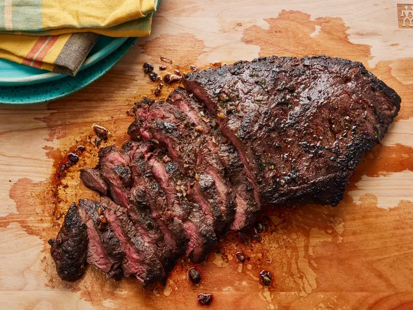

Description: "Skip the steakhouse and make restaurant-worthy steak at home. It's easier than you think to recreate it in your own kitchen! Trust us, you're going to want to bookmark this irresistible flat iron steak recipe — you'll come back to it again and again!"
Note: Descriptions, Recipes, and Ingredients are all pulled from the Allrecipes website